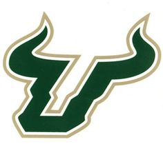
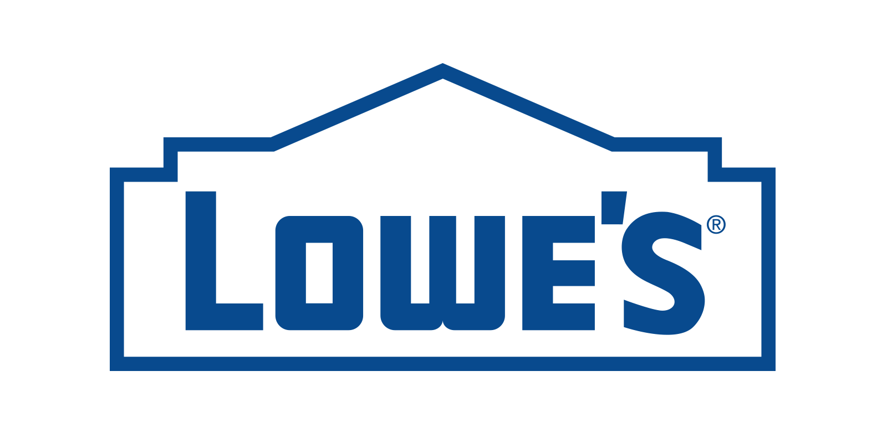
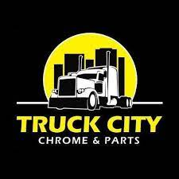

| Contact Information |
Cellphone: (813)-412-0634 |
Email:bryanmiranda1230@yahoo.com |
| Location:Gibsonton, FL |
Address:10021 Linda st |
Zip Code:33534 |
LinkedIn:Click Here |
Github Profile: Click Here |
Indeed:Click Here |
Qualifications Summary
•6+ years of experience in the retail, merchandising and receiving environment.
•Expertise in Inventory management and Vendor/Supplier communications.
•Fluent in Spanish which helps with language barriers in all levels of the organization.
Education
East Bay high school
05/19/2016
Degree: High School Diploma
School programs that were done include the following:
• Expertise in Inventory management and Vendor/Supplier communications.
AUTOMOTIVE: Took a 4 year program at the high school that taught me real world issues when it came to vehicles.From oil changes to engine issues.
The list can go on. I have a FADA Certification as well.
COMPUTER: Proficient in all Microsoft programs.
Hillsborough Community College
05/06/2020
Degree: Associates in Arts
Concentration: Business Administration
Relevant Course Work
| Financial Accounting |
Managerial Accounting |
Business and Economic Statistics |
Macroeconomics |
Microeconomics |
Calculus for Business and Social Sciences |
University of South Florida

05/18/2020- 12/09/2022
Degree: Bachelors Degree
Concentration: Business Analytics and Information Systems
Relevant Coursework
| Information Systems in Organizations |
Principles of Finance |
Strategic Management and Decision Making |
Managing Information Resources |
Business Application Development |
System Analysis and Design |
Database Design and Administration |
Business and Economic Statistics II |
Supply Chain Operations and Management |
Relvant Class Projects
C# Projects
Created applications ranging from calculators to asking users for inputs with constraints implemented to understand fundamentals of coding and designing applications.
SQL Management Studio
Designed databases ranging from small enterprises to entire soccer teams. Ensuring that everything was interconnected properly so when queries were processed.
Information that was ran in the query would come up correctly. Constraints and stored procedures created to ensure that information was authentic as well.
HTML Project
This project itself is something that I've done for one my class projects! Headers and body used. Tables as well to show diversification in some of the coursework ive taken!
Work History
Walmart Supermarkets
Cap 2 Grocery Clerk
08/26/17-10/6/17
Similar responsibilities to that of Publix but faster paced due to the amount of items per truck, you’re always doing something different in terms of inventory. Organization was essential in this job.
Constantly checking item inventory to make sure it’s on par with what’s on record.
Additionally, scanning out inventory for donations in huge bulks.
Publix Supermarkets
Grocery Clerk
02/23/2016-06/23/2017
Responsibilities would vary over the schedules. Some of the duties I had would be unloading and loading trucks particularly dry grocery and dairy.
Break down the trucks in a organized fashion to make it easier
when stocking the products to the shelf. Using the scanner to review what items we had in stock and also what Items we needed to bring in for the next truck.Rotation and making sure the store as a whole is clean.
Lowe's Home Improvement

CSA - Lumber Department
11/29/2018- 07/18/2020
Helping customers with any of their needs when it comes to big or small projects.
• Incorporated methods to increase efficiency for filling merchandise in the lumber department by modifying the top stock layout to correlate with the merchandise at the shopping level. disposal to do so.
• Consulted with customers about estimates/quotes about their current and future projects which boosted customer satisfaction on the outlook of the company.
Similar to that of other retail stores where the customer is the priority always.
Truck City Chrome and Parts LLC

Operations Managers
09/2020 - Current Position
Created a system for categorizing inventory and ensuring that when merchandise is received it goes in its designated location.
Communicating with Suppliers on invoices/ special orders for our customers and ensuring merchandise is ordered with the customers desired design but is also received in a timely manner.
Developed new designs for the stores merchandise to make products stand out more to the clientele while also creating a fluidity for customer traffic.
Ensuring that productivity and sales goals are met on a regular basis with the company.
Skills and Abilities
Data Analysis & Visualizations
Microsoft Excel
Tableau
Business Applications
Microsoft Powerpoint
Microsoft Access
Programming Languages
C# Programming
SQL Management Studio
Python
HTML